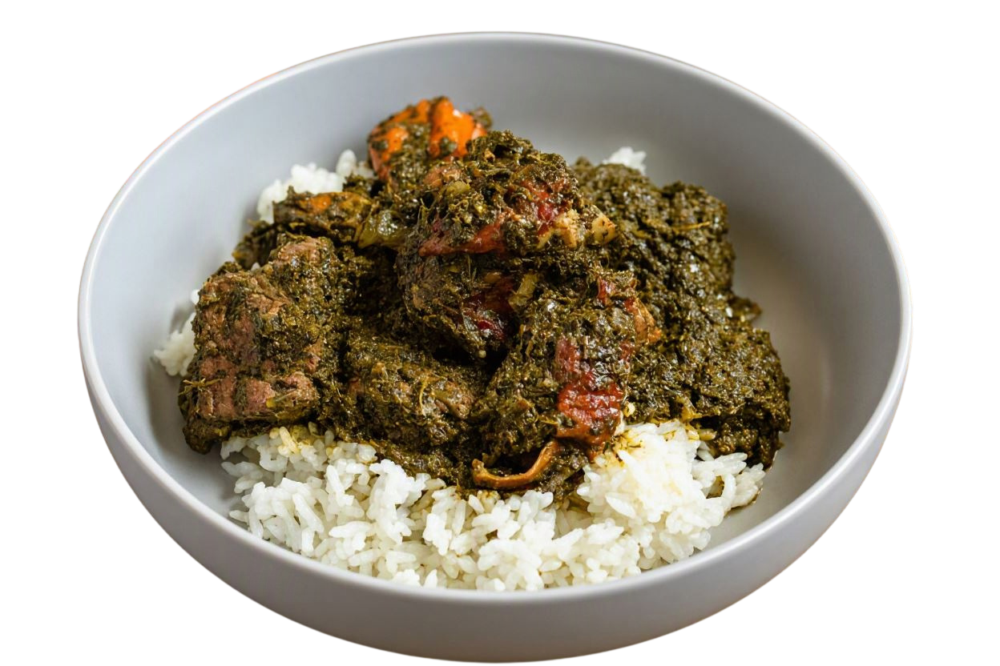
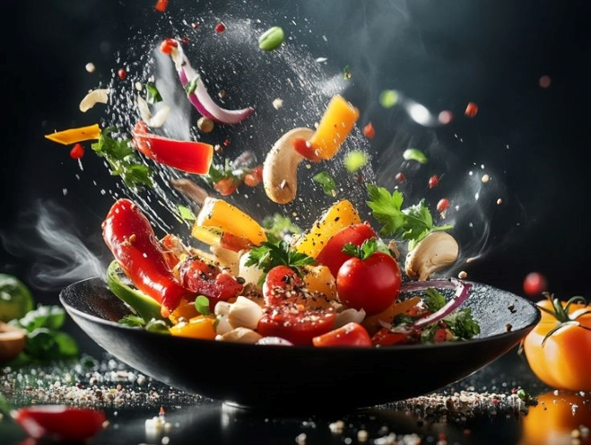
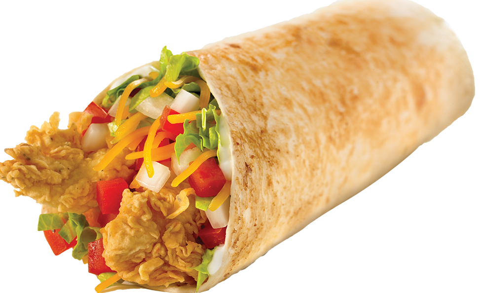

There are currently no ongoing events, but we are thrilled to share that we have some exciting events lined up for the near future.
We are here to serve you! You can place your order through the following options:
OPTION 1:Call us on TEL: 0243612866 to make an order.
OPTION 2: Send us a message on WhatsApp at Whatsapp: 0243612866 to place your order.
